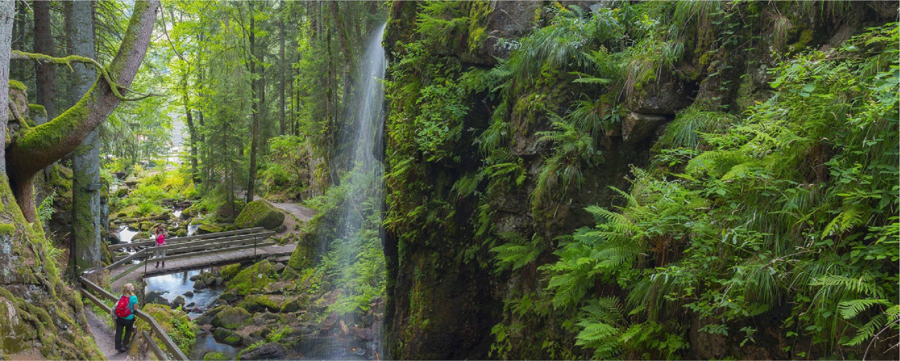
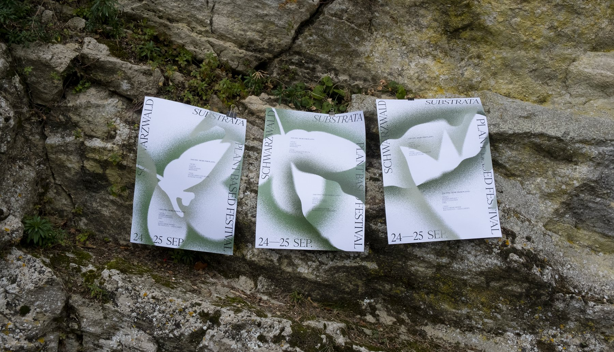
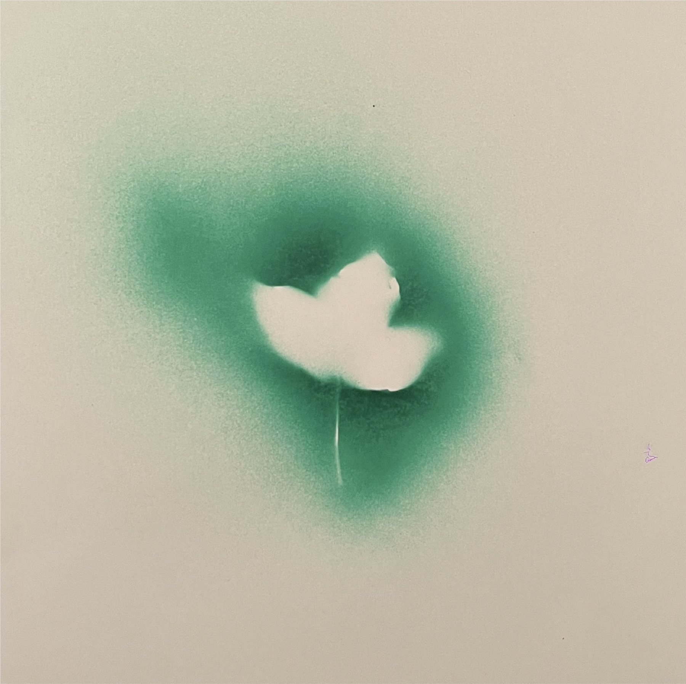
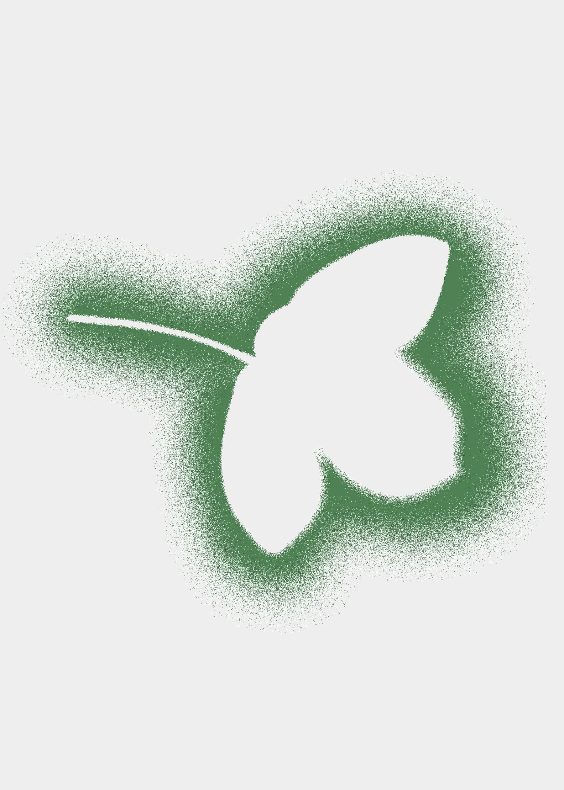
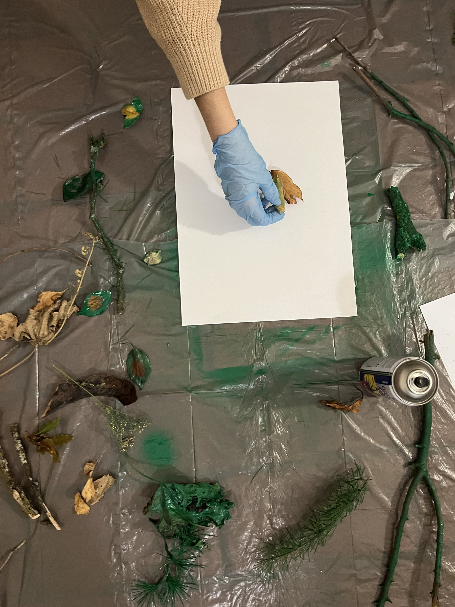

01.
SUBSTRATA ↗
Music festival visual identity
SUBSTRATA is a unique festival of experimental electronic music: a concert that takes place quietly every day, under the green surface of leaves and in the intricate labyrinths of roots. plants and fungi orchestrate this concert in their own particular language, which is then translated into sound.




